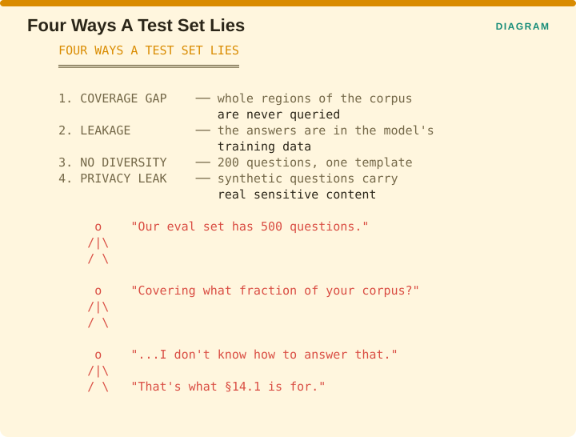
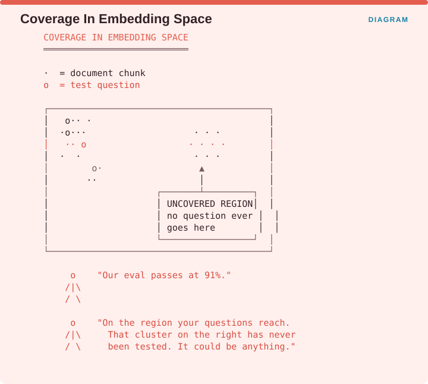
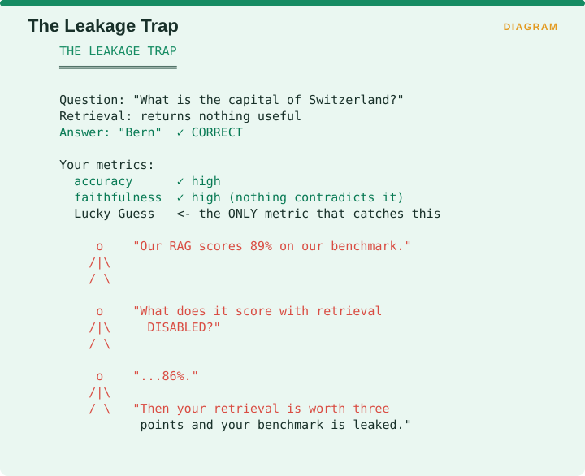

Measuring Retrieval › Chapter 14 - Is Your Test Set Any Good?
Chapter 14 - Is Your Test Set Any Good?
14.0 The layer below the metrics
Chapter 13 asked whether the judge is trustworthy. This chapter asks whether the questions are.
A perfect metric computed by a perfect judge over an inadequate test set tells you nothing at all, and test sets fail in ways that are invisible from inside them, because every question you have gets answered and no question you never wrote gets missed.

The figure names four. A coverage gap means whole regions of your corpus are never queried. Leakage means the answers are already in the model’s training data. No diversity means 200 questions generated from a single template. A privacy leak means synthetic questions that carry real sensitive content out with them.
A team saying their evaluation set has 500 questions has answered a question about size. Asked what fraction of their corpus those questions cover, most cannot answer, and usually cannot say how they would find out. §14.1 is for exactly that.
14.1 Semantic Test Coverage
One-line: Embed document chunks and test questions in one vector space, then quantify how much of the corpus your questions actually reach.
Facets: Integrity/Drift | corpus | free | R | EMERGING VERIFIED Source: arXiv:2510.00001
The problem it solves
The paper’s framing of the gap is precise. Current practice has no systematic method for ensuring that a test set adequately covers the underlying knowledge base, which leaves developers with significant blind spots they cannot see from the inside.
The construction
The method embeds document chunks and test questions into a single shared vector space and computes three coverage measures, being basic proximity, content-weighted coverage and multi-topic question coverage, along with outlier detection that filters out irrelevant questions and refines the set.

The figure plots both in one space, with dots for document chunks and circles for test questions. Most of the questions cluster on the left near the chunks they were written from. On the right sits a dense cluster of document chunks with no question anywhere near it.
So a team reporting that their evaluation passes at 91% has measured performance on the region their questions reach. That cluster on the right has never been tested, and its behaviour could be anything at all.
Advantages and disadvantages
| Advantages | Disadvantages |
|---|---|
| Answers a question nothing else answers | Coverage in embedding space, not semantic space - inherits your embedder’s blind spots |
| Reference-free; needs no labels | Uncovered ≠ important; some regions deserve no questions |
| Actionable - points at where to write new questions | Depends on chunking choices |
| Outlier detection prunes bad questions too | EMERGING single paper, limited replication |
Recommendation
Run this once, today, on the evaluation set you already have. It is cheap, needing only embeddings you have already computed plus a clustering step, and it almost always reveals a region of the corpus nobody has tested. That finding on its own usually justifies the afternoon.
Then use it as a generation target by writing questions for the uncovered clusters.
14.2 Leakage and contamination
Source: Generating Leakage-Free Benchmarks for Robust RAG Evaluation · arXiv:2605.08838 VERIFIED
The problem is severe and easy to miss. If the answer to your test question was in the model’s training data, the model can answer it without retrieval, so your RAG evaluation is measuring parametric memory wearing a retrieval costume.

The figure works the mechanism. The question asks for the capital of Switzerland. Retrieval returns nothing useful. The model answers “Bern”, which is correct. Accuracy scores high, faithfulness scores high because nothing in the retrieved context contradicts the answer, and the only metric that catches what happened is the Lucky Guess rate from §C.1.2.
The diagnostic is trivial and almost nobody runs it: score your benchmark with retrieval turned off. The gap between RAG-on and RAG-off is the most honest single number available about whether your retrieval earns its keep. A team reporting 89% on their benchmark and 86% with retrieval disabled has learned that their retrieval is worth three points and their benchmark is leaked.
This is also Cao et al.’s first research question from the Supplement A Addendum §AD.1, so running it gets you a robustness metric at the same time.
It connects directly to the Brehme survey’s observation that the widely used public datasets, including HotpotQA, Natural Questions and MS MARCO, are all built on publicly available knowledge, which presents a problem because the RAG system becomes redundant on exactly the questions the model was already trained on.
14.3 Synthetic test-set quality
Source: Driouich et al., Diverse And Private Synthetic Datasets Generation for RAG evaluation: A multi-agent framework, TRUST-AI@ECAI 2025 · arXiv:2508.18929 VERIFIED
Generating test questions automatically runs into two requirements that pull against each other.

Diversity means more varied questions and therefore better coverage. Privacy means less risk of reproducing real sensitive content inside your test set. Generating from your real corpus gives high diversity with privacy risk, and generating from templates is safe with low diversity, so the two ends of that axis are the two failures you are choosing between.
BenchmarkQED from Microsoft Research is the tooling counterpart, where AutoQ synthesizes queries across a spectrum from local to global, AutoE evaluates answers on relevance, comprehensiveness, diversity and empowerment, and AutoD curates datasets. CAUTION It is software rather than a paper, so cite it as a tool.
14.4 The open gap

In software testing there is a technique called mutation testing, where you deliberately inject bugs into the code and measure what fraction of them your test suite catches. It answers the question of whether your tests are any good, using the tests themselves.
The RAG analogue would be to corrupt the corpus in known ways, swapping a date, negating a claim or deleting a passage, and then measuring what fraction of those corruptions your evaluation set detects.
Nobody has published this, and it is the most obvious missing instrument in RAG evaluation. VersionRAG’s implicit change detection, where baselines score between 0% and 10%, is the closest existing work.
Measuring Retrieval · Madhava Gaikwad · First edition, September 2026